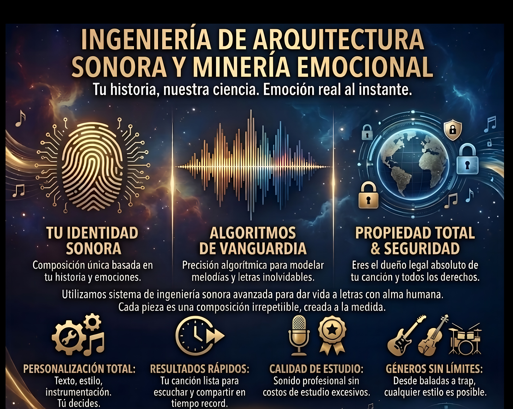

◆ Activos Musicales Digitales · Edgar Romero ◆

Ingeniería de Arquitectura Sonora
Cada composición es irrepetible. Tu historia, nuestra ciencia. Emoción real al instante.
◆ Catálogo ◆
Indie Rock · Synth-Rock · Psicodelia Moderna
Un viaje introspectivo a través de la metáfora del desierto y el aire. La canción no es solo un relato, sino una invocación de sentimientos olvidados bajo el peso de la existencia. Con una instrumentación cargada de arpegios oscuros y una atmósfera densa, el narrador se enfrenta a la fragilidad del "cáliz" (la vida o el alma) frente a la fuerza invisible pero implacable del "viento" (el tiempo o el cambio). Es un himno a la resistencia del espíritu en un paisaje desolado.
Existencialismo · Misticismo · Nostalgia Oscura · Destino.
Reggae Roots · Conscious Music · Vibración Positiva
Una exploración rítmica sobre la perseverancia de la consciencia en tiempos de oscuridad. Utilizando la cadencia relajada pero firme del reggae, la canción establece un diálogo entre el calor del "fuego" (la chispa divina o la voluntad) y la frialdad de la "niebla" (el caos exterior y la incertidumbre). La instrumentación, marcada por un bajo profundo y un teclado rítmico, invita a la meditación activa, reforzando la idea de que la claridad no se encuentra al final del camino, sino que se lleva dentro como una antorcha que guía a través de lo desconocido.
Resistencia · Consciencia · Claridad Espiritual · Resiliencia
Cumbia Urbana · Sátira Pop · Ritmo Tropical Contemporáneo
Una oda humorística a la capitulación física que sigue a un banquete de la calle. La letra funciona como una crónica detallada del sopor, mencionando desde el "suadero" y el "pozole" hasta la sensación de que la sangre abandona el cerebro para concentrarse en la digestión. Es un himno a la procrastinación involuntaria donde el ritmo energético de la cumbia contrasta irónicamente con el deseo del narrador de abandonar toda actividad productiva por un "té de manzanilla" y una siesta.
Sopor · Humor Costumbrista · Gastronomía · Relajación Absoluta.
Gospel-Folk · Blues Espiritual · Himno Moderno de Raíces
En el corazón del caos moderno existe un santuario: no de ladrillos, sino de silencio interior. La canción acompaña ese momento de la medianoche en que uno entra en la oscuridad no con miedo sino con alivio, porque ahí —entre el órgano cálido y los coros en llamada y respuesta— el alma puede finalmente decir su nombre. Una oración sin dogma, una misa sin iglesia.
Serenidad · Reverencia · Alivio · Esperanza
Pop Romántico · Balada Latina · Lírica de Claudicación
Donde antes había rosas rojas ahora hay cenizas. El jardín que floreció —una relación, una etapa, un yo anterior— quedó reducido a polvo después de las palabras amargas. La canción no busca redención fácil ni cierre luminoso: habita honestamente el duelo, camina entre los árboles esqueléticos y las fuentes rotas, y espera —tal vez— que algún día llueva sobre las cenizas. La guitarra de acero fría y el reverb vacío son el sonido exacto de lo que queda después de la destrucción emocional.
Entrega · Vulnerabilidad · Pasión · Ironía Romántica
Hard Rock · Metal Alternativo · Crítica Socio-política
En un mundo de hipervigilancia digital, "Manual de Pureza" emerge como un manifiesto contra la pérdida del matiz. La letra denuncia la creación de una "nueva inquisición" donde el contexto es sacrificado en el altar del juicio superficial. La composición musical, impulsada por guitarras distorsionadas y una interpretación vocal visceral, subraya la urgencia de un mensaje que advierte sobre cómo la búsqueda de una pureza ideológica absoluta termina por asfixiar el diálogo racional y la libertad individual.
Indignación · Vigilancia · Intensidad · Reflexión Crítica